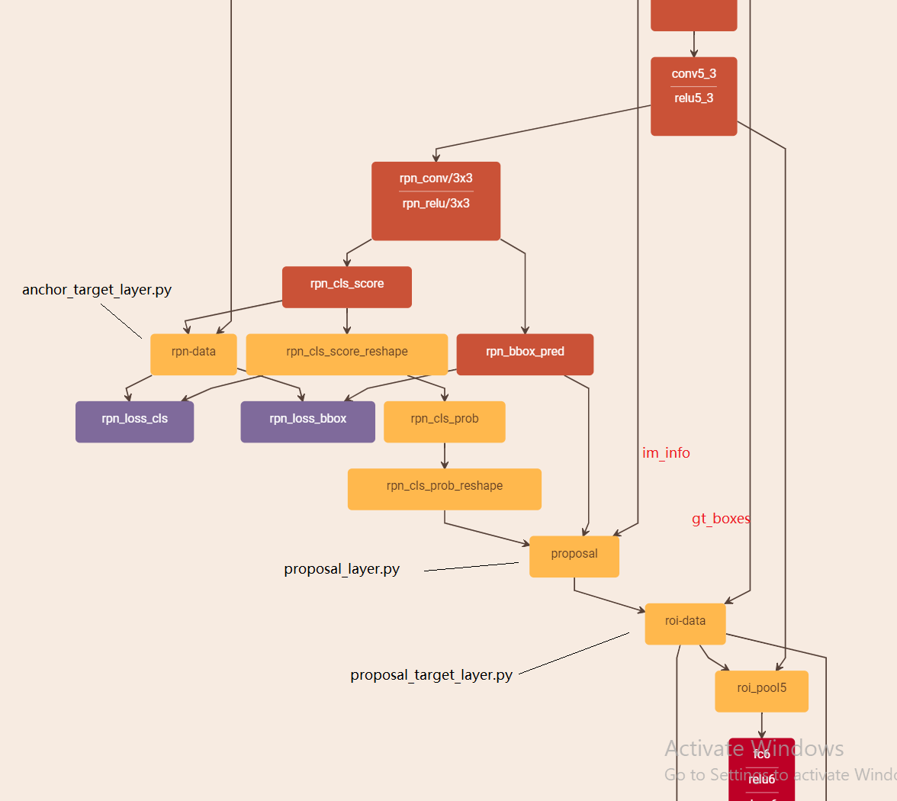
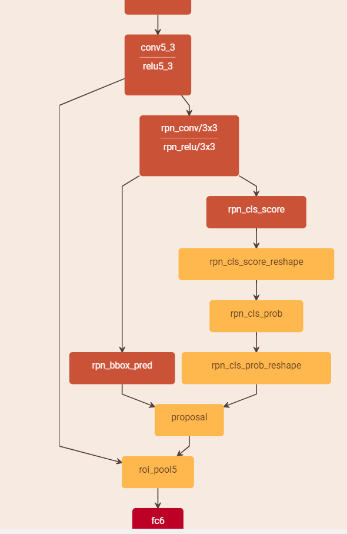

本文主要分析了 Faster RCNN 中 anchor_target_layer.py, proposal_target_layer.py 和 proposal_layer.py 三个自定义 python 层的代码。
训练阶段的主要网络结构

测试阶段的主要网络结构

proposal_layer.py （训练，测试阶段都有）
source
输入： score, bbox_deltas, im_info
- 生成 anchors, 利用预测得到的 bbox_deltas 作为输入，对所有的 anchors 作回归，得到 proposals. (注意，这里生成 anchors 的方式与训练时 anchor_target_layer.py 里一致)
- 对超出原图的 proposals 进行 clip, 筛除尺寸过小的 proposals.
- 根据输入的 scores 进行排序，选取前 N 个保留。（eg. 6000）
- 对剩下的 proposals 进行 nms，筛除一部分 proposals.
- 再根据 scores 排序，选取前一部分 proposals. (eg. 300)
- 输出 proposals
anchor_target_layer.py (仅在训练阶段)
source
输入: ‘rpn_cls_score’,’gt_boxes’,’im_info’, ‘data’
(1) 生成 所有的 anchors，记为 all_anchors，选出在图像内部的 anchor，记为 anchors.
(2) 生成与 1 步中 anchors 同尺寸的 labels，初始化为 -1.
(3) 计算 anchors 与 gt_boxes 的 IoU，得到 overlaps，得到每个 anchor 对应的 gt_box (IoU 最大).
(4) 根据 RPN 正负样本选取规则 1，将每个 gt_box 的 IoU 最大 anchor 的 label 置为 1.
(5) 根据 RPN 正负样本选取规则 2，将与任意 gt_box 的 IoU 大于某阈值的 anchor 的 label 置为 1. 将与所有 gt_box 的 IoU 小于某阈值的 achor 的 label 置为 0. 剩下的保留为 -1. 这样，就为每个 anchor 分配了标签。
(6) 根据正负样本的数量限制，将一部分正样本（label 为 1）置为 -1. 负样本同样。
(7) 计算 anchors 中每个 anchor 和 其对应的 gt_box 之间的 delta 作为 bbox_targets.
这样，上面计算得到的 labels 和 bbox_targets 其实就是 RPN 网络的 loss 的真值。
(8) 将得到的 anchors 和 bbox_targets unmap 回原来的 all_anchors 中。这样，所有生成的 anchors 都有一个类别标记（-1，0，1）和 bbox_targets. (在 all_anchors 不在 anchors 中的 anchor 的 bbox_target 用 0 填充。label 用 -1 填充。这样在计算 RPN loss 时不会计算此 anchor 的 loss.(-1 被忽略))。
(9) 将 all_anchors 的 labels 和 bbox_targets 输出，与预测的结果计算 rpn_loss.
proposal_target_layer.py (仅在训练阶段)
source
接受 proposal_layer.py 的输出 和 gt_boxes (每个 GT box 的坐标和类别)作为输入，格式 (0, x1, y1, x2, y2)
- 将输入的 rois 和 gt_boxes 合并 (vstack)，形成总的 rois, 共 M 个。
- 计算每个 roi 和每个 gt_box 的 IoU，形成一个 matrix，设 gt_boxes 共有 N 个，则尺寸为 $M\times N$.
- 找到每个 roi 对应的 IoU 最大的 gt_box 的索引，并将此 gt_box 的类别赋给此 roi. 这样每个 roi 都有一个物体类别。
- 选择一些 IoU 大于某阈值的 roi 作为 foreground，选择一些 IoU 在某区间内的 roi 作为 background。将作为 background 的 roi 的类别改为 0，用作最后 loss_cls 的计算。将 fg rois 和 bg rois 合并(vstack)，作为一个输出。记为 rois，用作 ROI Pooling.
- 计算这些 rois (第四部获得)于其对应的 gt_boxes 之间的 delta 作为位置预测的目标，用来计算 loss_bbox.